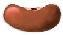

![[SGF FF[4] - Smart Game Format]](images/head.png)
|
|
This is the official specification of the SGF FF[4] standard.
SGF is the abbreviation of 'Smart Game Format'. The file format is
designed to store game records of board games for two players.
It's a text only, tree based format. Therefore games stored in this
format can easily be emailed, posted or processed with text-based tools.
The main purposes of SGF are to store records of played games and to
provide features for storing annotated and analyzed games (e.g. board
markup, variations).
Last updated: 2021-12-01
See history for changes.
| For users | |
|---|---|
| Users guide | An user orientated introduction to SGF files |
| Tools and more | |
| SGFC | SGF Syntax Checker & Converter |
| Example file | An example SGF file plus pictures to show the basic and sophisticated features of SGF |
| For developers | SGF Specification |
| Basics |
|
| Properties |
|
| Specification Supplements | |
| UTI-Specification | For Apple systems: a proposal for a Uniform Type Identifier (UTI) for SGF files (draft) |
| Changes to FF[3] | To get a quick overview of what's new in FF[4] have a look at the changes from FF[3]. |
| Compatibility | Compatibility issues |
| Converting | Converting old files to FF[4] |
| Index of properties | Index of all FF[1]-FF[4] properties (alphabetical) |
| Translations | There were translations in the past, currently all links are broken.
Following (outdated) copies are available from archive.org:
|
| Old specifications | |
| FF[1] | Specification of FF[1] by Anders Kierulf |
| FF[3] | Specification of FF[3] by Martin Müller |
| Style guide | Style guide by Martin Müller (old but still valid) |
| Obsolete or outdated information | |
| List archive | Archive of the original email list from 1996 to 1997 |
| FF[5] | Ideas for FF5 from around 2003 (obsolete) |
| XGF | proposal for an XML format to replace SGF from around 2003 (obsolete) |
Note: Many Go (WeiQi) terms are used throughout the specification, e.g. point is used instead of field or square.
Note: Please pay attention to the difference of mandatory (has to be, must not, ...) and recommended (suggested, should have, shouldn't ...). Mandatory topics HAVE TO be done exactly this way, otherwise it's illegal. Recommended topics should but don't have to be followed. If the application doesn't obey those suggestions then the 'only' consequence is bad style.
|
Arno Hollosi ahollosi@xmp.net | Hosted at
 Red BeanVirtual solutions for virtual people |